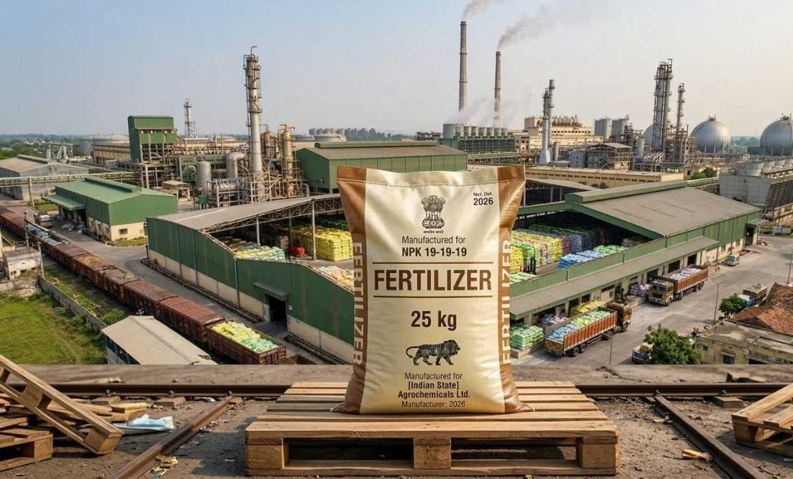

Fertilizer Industry Packaging Bags
Heavy duty polypropylene woven bags engineered for chemical fertilizer, organic fertilizer and agrochemical companies. Built to resist chemical exposure, moisture and rough transportation conditions across India.
Bag TypesPP Woven, Laminated, Valve
Available Sizes25 KG, 50 KG, Custom
Chemical ResistantYes
UV StabilizedAvailable on Request
PrintingSafety Info & Brand Name
SupplyPan India